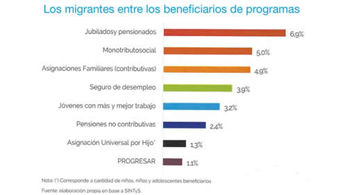

Real Chubut - Agencia de Noticias


Argumentos que no resisten

Un riguroso trabajo elaborado por el propio gobierno revela que los migrantes no gastan, en proporción, ni más presupuesto en salud ni en educación, ni en planes sociales que el resto de los argentinos.
A contramano del discurso oficial y de cierta derecha que busca pescar en el río de los Bolsonaro, según un informe oficial divulgado la semana pasada, los migrantes no gastan en proporción ni más presupuesto en salud, ni en educación, ni en beneficios sociales que el de la población no migrante, es decir, que el resto de los argentinos. Así, mientras que el porcentaje de la población migrante es aproximadamente el 4,5 por ciento de los habitantes del país, el gasto social invertido en ese sector es del 4,9 por ciento del total del gasto, lo que representó un 0,7 por ciento del PBI en el año 2015. En definitiva, ni utilizan más las universidades públicas, ni los hospitales, ni cobran más planes que el resto, por más que en la campaña electoral que viene seguramente se van a escuchar otras cosas.
En la afanosa búsqueda de algún responsable de la profunda crisis en la que está envuelta su gestión, el gobierno de Cambiemos se aferró a la bandera de la antiinmigración luego de que la policía detuviera a dos venezolanos, un turco y un paraguayo en la protesta contra el presupuesto en el Congreso. Obviamente, no importó que todavía no se hubiera recolectado ninguna prueba sobre el supuesto accionar delictivo de estos extranjeros. El presidente Mauricio Macri planteó entonces que el país debía abrir un debate acerca de si la legislación vigente no era “demasiado generosa” con los migración extranjera y agregó que se debía buscar como eje “gente que venga a trabajar y a hacer su aporte”.
Desde la oposición amigable, el jefe del bloque de senadores del Peronismo Federal, Miguel Angel Pichetto, aprovechó para retomar su prédica xenófoba. En su discurso, los argentinos somos “tontos” porque permitimos que miles de colombianos estudien en las universidades públicas y los paraguayos se operen en los hospitales, sin reciprocidad. “Funcionamos como ajuste social de Bolivia y ajuste delictivo de Perú”, dijo alguna vez.
Pero un informe público los desmiente. Lo presentó días atrás el Consejo Nacional de Coordinación de Políticas Sociales junto con la Organización Internacional para las Migraciones (OIM), en el marco de los Objetivos de Desarrollo Sostenible (ODS) aprobados en 2015 por la ONU. Estudiar en qué medida el gasto público social se destina a atender las necesidades de los migrantes es una de las preocupaciones de las Naciones Unidas, dado que lo identifica como uno de los aspectos centrales para el desarrollo.
Los datos
La estimación del gasto público social nacional que impacta en migrantes se realizó a partir de relevar los más de 200 programas que componen dicho gasto y estimar el peso que los migrantes tienen en cada uno de esos programas, para lo cual se utilizaron datos de diversas fuentes oficiales. Entre esas fuentes están el Censo 2010, la Encuesta Permanente de Hogares que hace el Indec y el sistema Sintys que concentra la información de los beneficios de diferentes programas sociales.
En la introducción al trabajo se destaca que Argentina “tiene una larga historia de migraciones” y que la incorporación de grandes contingentes provenientes de otras latitudes resultó decisivo en la conformación de la Nación. Con ese espíritu, en 2004 se sancionó la ley 25.871 que estableció las condiciones de ingreso, permanencia y egreso de los migrantes, en reemplazo de la restrictiva “ley Videla”, de la época de la dictadura. El principio fundamental de la nueva norma es la igualdad de trato entre los nacionales y los extranjeros. En su artículo 6 establece: “El Estado en todas sus jurisdicciones asegurará el acceso igualitario a inmigrantes y sus familias en las mismas condiciones de protección, amparo y derechos de los que gozan los nacionales, en particular lo referido a servicios sociales, bienes públicos, salud, educación, justicia, trabajo, empleo y seguridad social”.
En el detalle de los programas sociales realizado en la investigación, los migrantes –el 4,5 por ciento de la población– son beneficiarios de Jubilaciones y Pensiones en un 6,9 por ciento, del Monotributo social en un 5 por ciento, Asignaciones Familiares (no contributivas) en 4,9 por ciento, Seguro de desempleo un 3,9 por ciento, plan Jóvenes con más y mejor trabajo un 3,2 por ciento, Pensiones no contributivas en un 2,4 por ciento, la Asignación Universal por Hijo un 1,3 por ciento y un 1,1 por ciento del plan Progresar. Se hace la salvedad de que en el caso de la AUH se toma en cuenta la condición de migrantes de los niños beneficiarios y no la de sus padres.
En el análisis de los 117 programas analizados, los investigadores concluyeron que el gasto social destinado a migrantes en 2015 fue de 40.829 millones de pesos, lo que representa el 4,9 por ciento del gasto social nacional y el 0,7 por ciento del PBI. El organismo más relevante en términos del gasto social destinado a migrantes fue, por muy lejos, el Anses, que concentró más del 80 por ciento de los recursos. Bien atrás quedaron el Ministerio de Desarrollo Social (5,7 por ciento), de Educación (3,8 por ciento), de Salud (2,9 por ciento) y el Ministerio de Planificación (2,8 por ciento).
Debe hacerse la salvedad respecto a las características de las diferentes corrientes migratorias. El gasto en el sistema previsional está concentrado en gran medida a los italianos y españoles que llegaron al país luego de la Segunda Guerra Mundial y hoy están jubilados. Hecha esta aclaración se da la paradoja de que los migrantes son principalmente beneficiarios de programas contributivos –es decir, para los que tuvieron que hacer aportes previamente– de los que no tienen base contributiva. Así, los migrantes reciben en un 79 por ciento planes de base contributiva y un 21 por ciento de base no contributiva, en cambio, entre los no migrantes la proporción es del 64 y el 36 por ciento, respectivamente.
Bolsocandidatos
El discurso xenófobo en Macri no es nuevo. “Pareciera que la ciudad de Buenos Aires se tiene que hacer cargo de los países limítrofes, y eso es imposible. Todos los días llegan entre 100 y 200 personas nuevas a la ciudad, que no sabemos quiénes son, de la mano del narcotráfico y la delincuencia”, sostuvo ya en sus épocas de jefe de gobierno, en diciembre de 2010, luego de la toma del Parque Indoamericano, salvajemente reprimido. Basándose en datos oficiales, el sitio Chequeado aseguró que la afirmación era falsa, y que la cifra correcta era de 31 inmigrantes por día si se hacía un promedio de los arribados en los ocho años previos.
Más recientemente, en enero de 2017, el Presidente firmó un decreto de necesidad y urgencia para restringir las condiciones de permanencia e ingreso de extranjeros al país establecidos en la ley 25.871. La medida fue declarada inconstitucional por la Cámara en lo Contencioso Administrativo en marzo pasado. Ahora, según publicó ayer Clarín, el Gobierno planea volver a la carga con una propuesta similar como parte del proyecto de reforma del Código Penal.
El éxito de Jair Bolsonaro en Brasil, más los discursos antiinmigrantes del presidente estadounidense Donald Trump y del ministro italiano Mateo Salvini revivieron las ganas de algunos en convertirse en sus émulos locales. Pero, de acuerdo al informe elaborado por el propio Gobierno, deberán buscar mejores argumentos. Según concluye el trabajo, la población migrante en el país se encuentra fuertemente arraigada y que “en líneas generales, la población que migra a la República Argentina lo hace para trazar un proyecto de vida a largo plazo”.
Fuente: Pagina 12